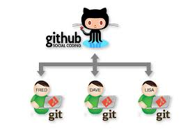

Analizar la importancia de llevar un control de versiones (git), tener la facilidad de crear repositorios y mantener una copia en la nube (github).
En el desarrollo de la actividad se utilizo una imagen de google, programa balsamiq para la realizacion de la maquetacion
Imagen google
https://informaticaynadamas.com/wp-content/uploads/2020/02/git-github.jpg
Programa balsamiq
https://balsamiq.cloud/spaces
bienvenido al curso de diseño de sitios web, realizaremos una breve introducion de los programas
GIT Y GITHUB.
Los sistemas de control de versiones son programas que tienen como objetivo controlar los cambios en el desarrollo de cualquier tipo de software, permitiendo conocer el estado
actual de un proyecto, los cambios que se le han realizado a cualquiera de sus piezas, vamos conocer uno de los sistemas de control de versiones existentes en la actualidad que se ha popularizado tremendamente, gracias al sitio Github. Se trata de Git, el sistema de control de versiones más conocido y
usado actualmente, que es el motor de Github.
se encuentra Github y qué tiene que ver con Git, por lo que intentaremos aclarar algo en este sentido. Git es un sistema de control de versiones distribuido. Con Git hacemos repositorios de software. GitHub es un servicio para hacer hosting de repositorios de software que
se administra con Git. Digamos que en GitHub mantienes una copia de tus repositorios en la nube, que además puedes hacer disponible para otros desarrolladores.